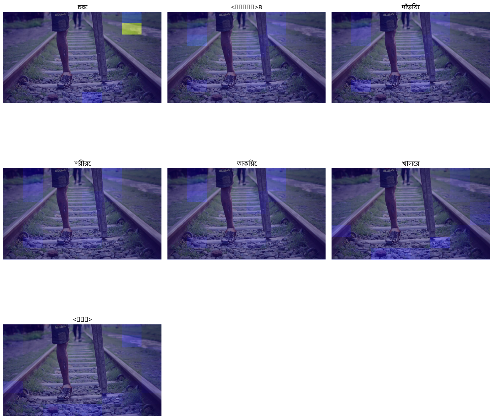
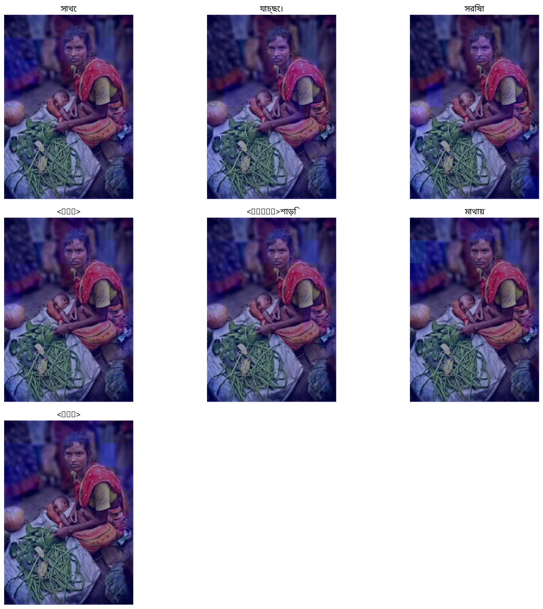
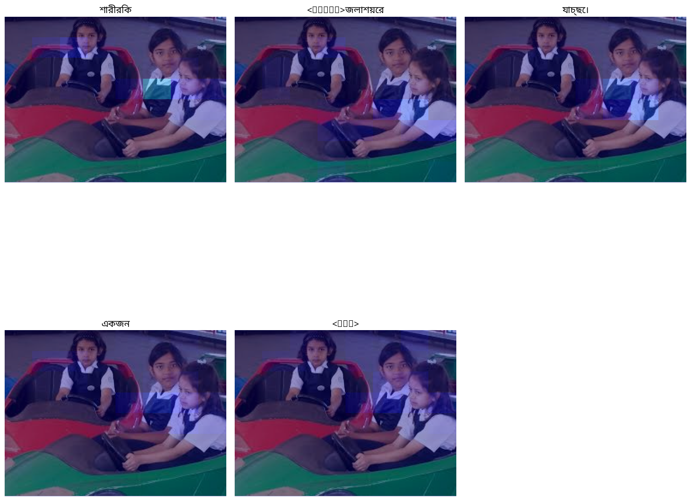
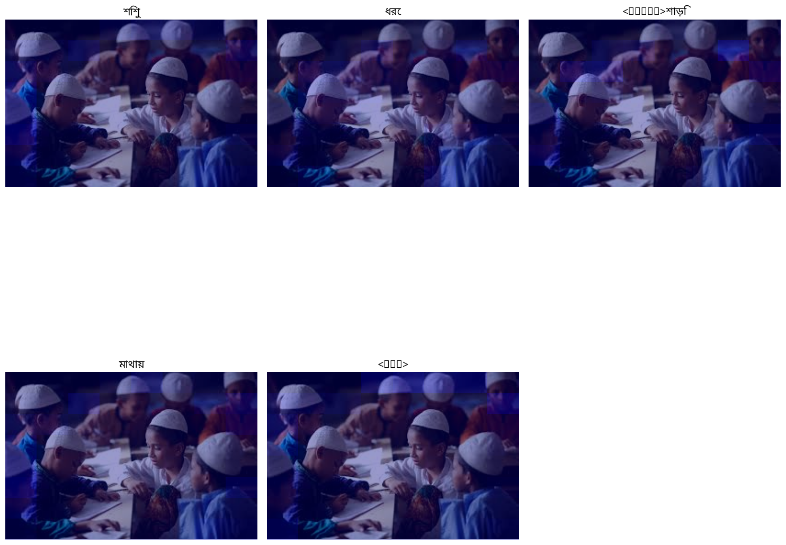
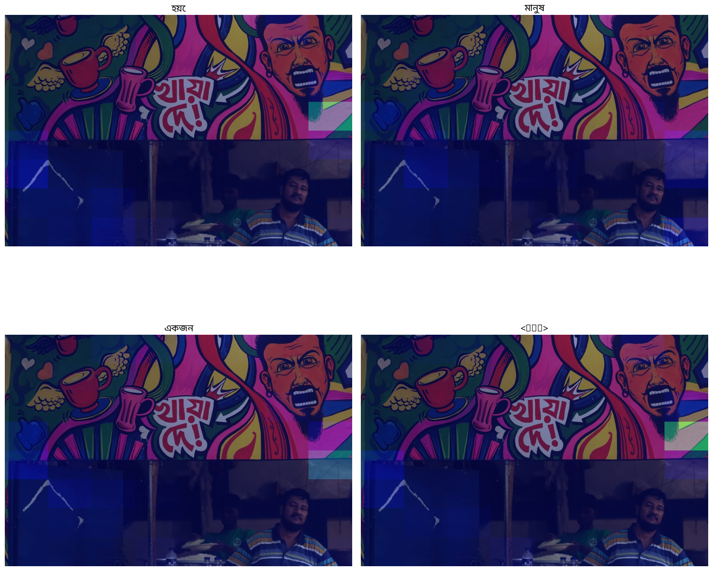
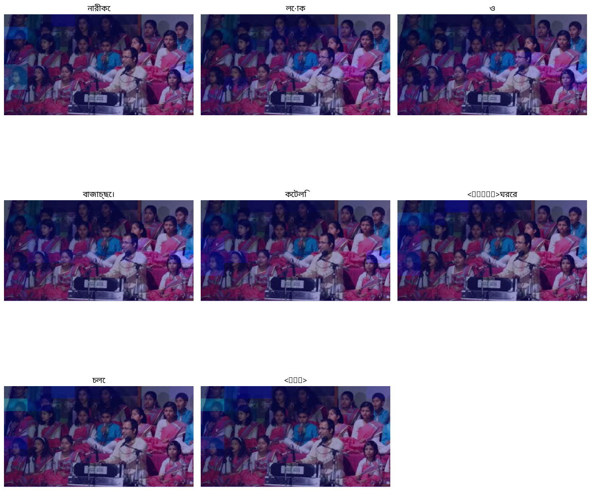
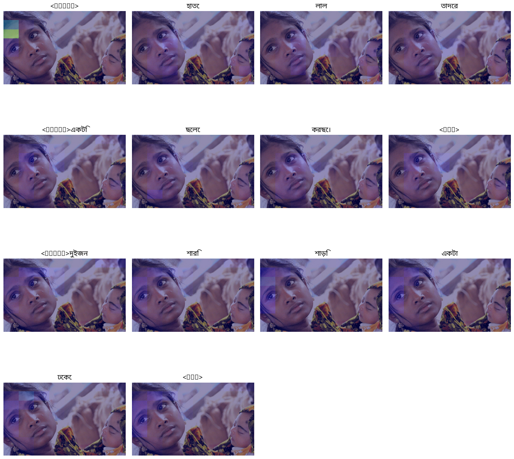
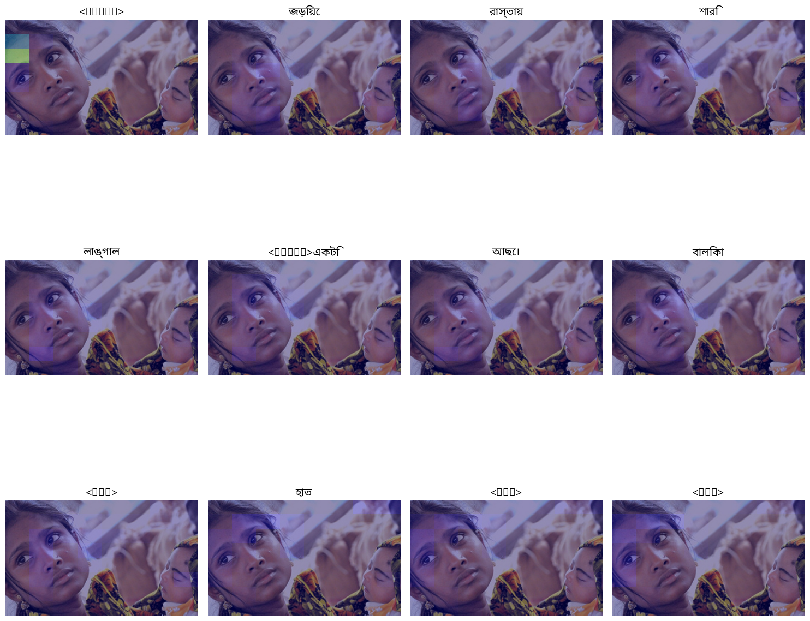
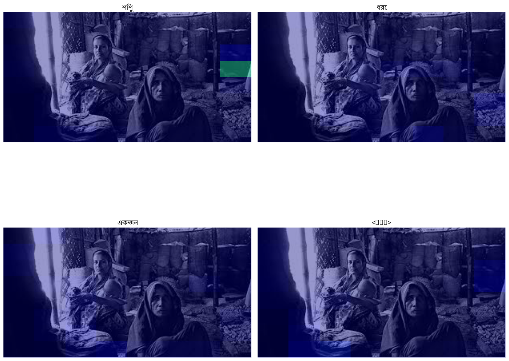

Generated Captions
148.png
GT: খালি শরীরে একজন পুরুষ মানুষ কাজ করছে।
Pred: চরে ৪ দাঁড়িয়ে শরীরে তাকিয়ে খালের

1589.png
GT: একজন নারী একটি শিশু কোলে নিয়ে আছে।
Pred: সাথে যাচ্ছে। সরিষা শাড়ি মাথায়

1491.png
GT: তিনজন বালিকা বসে আছে।
Pred: শারীরিক জলাশয়ের যাচ্ছে। একজন

1152.png
GT: কয়েকজন শিশু মাথায় টুপি পরে পড়াশোনা করছে।
Pred: শিশু ধরে শাড়ি মাথায়

2253.png
GT: টিশার্ট পরা একটা ছোট ছেলে হাতে কিছু নিয়ে তাকিয়ে আছে।
Pred: হয়ে মানুষ একজন

1203.png
GT: একজন পুরুষ অনেকগুলো নারী ও শিশু বসে আছে।
Pred: নারীকে লোক ও বাজাচ্ছে। কেটলি ঘরের চলে

1470.png
GT: একজন নারী ও একটি শিশু আছে।
Pred: হাতে লাল তাদের একটি ছেলে করছে। দুইজন শারি শাড়ি একটা ঢেকে

1470.png
GT: একজন নারী ও একটি শিশু আছে।
Pred: জড়িয়ে রাস্তায় শারি লাঙ্গাল একটি আছে। বালিকা হাত

1725.png
GT: সামনে একজন বয়স্ক নারী বসে আছে। পিছনে একজন নারী একটি শিশু কোলে নিয়ে আছে।
Pred: শিশু ধরে একজন

📊 BLEU Score Summary
- Count: 8
- Min BLEU: 0.0057
- Max BLEU: 0.7071
- Median BLEU: 0.2370
- Standard Deviation: 0.2021
- Mean BLEU: 0.2729